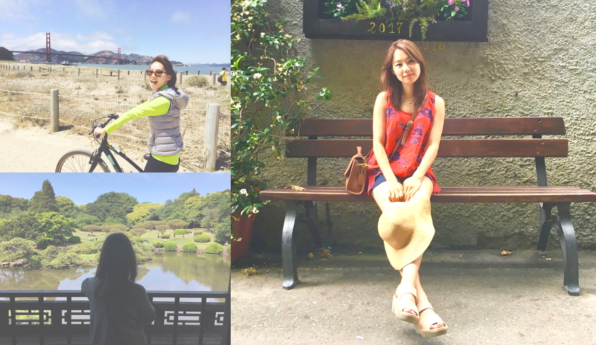

“Every great design begins with an even better story.” - Lorinda Mamo, Designer
Corporate accountant turned UX/UI designer. After completing graduate school, I landed a job at a Big Four accounting firm, where I worked as a corporate auditor. I was fortunate enough to work alongside some of the brightest and hardworking people. With a growth mindset, I was constantly learning about the importance of problem solving, client communications, and being a valuable team player. My mentors, coworkers, and clients have all contributed to my growth and learning during the three years at the firm and I truly thank them for that :)
Moving On. I started feeling that I had never been satisfied with a career in accounting. After all, my career would define a large part of my life. I realized that life is short and I did not want to spend it doing something I did not enjoy. I started doing some serious research.
I’m captivated by good design around me. Whether it be stunning home decors or eye-catching websites, good design has always amazed me. In today’s society, digital products have never been more advanced and integrated into our daily lives. Through friends and mentors, I've come to learn that UX/UI design is a powerful medium that can inspire people around us. I took a leap of faith and left my comfortable accounting career and enrolled into Bloc.io's UX/UI Design Apprenticeship program. Learning design has been an incredible ride so far.
"Donna is one of the most hardworking & dedicated students I have mentored during my 5 years at Bloc. She is very determined and has mastered the whole process to design a digital product. Donna always delivers on time and will be an great addition to any team looking for a talented upcoming UX/UI Designer."
Mike Dekker, UX/UI & Product Designer at Toptal
"Donna and I worked together on a project that commanded a great deal of effort and was subject to tight deadlines. I admired Donna’s ability to remain focused and committed as we worked through challenging situations as well as her agility to ever-changing priorities. Personable and dedicated, Donna is an excellent asset to any team."
Hutchins Balholm, Senior Associate at Pwc